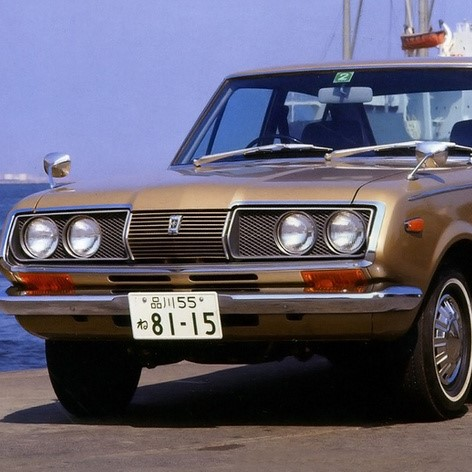
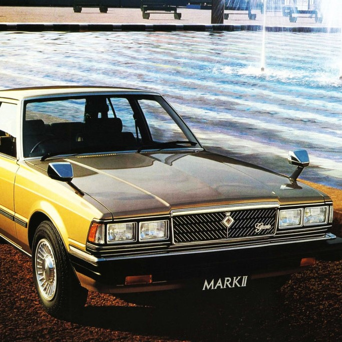
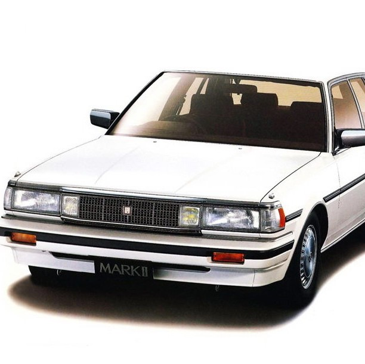
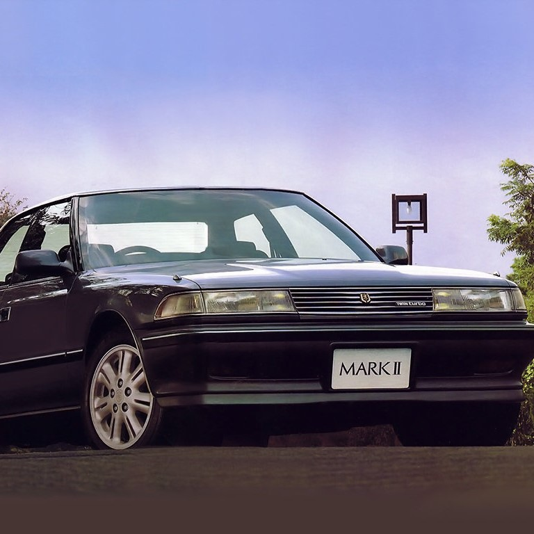
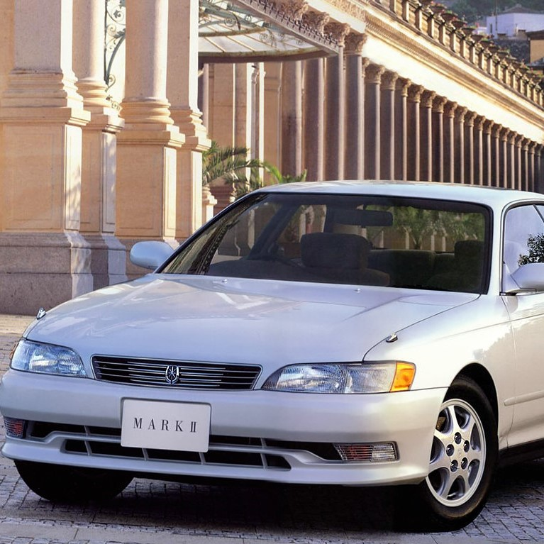

Toyota Mark II 1968, 1 поколение, T60, T70 (09.1968 - 12.1971)Toyota Mark II 1972, 2 поколение, X10, X20 (01.1972 - 11.1976)Toyota Mark II 1976, 3 поколение, X30/X40 (12.1976 - 04.1980)Toyota Mark II 1980, 4 поколение, X60 (10.1980 - 08.1984)Toyota Mark II 1984, 5 поколение, X70 (08.1984 - 08.1988)Toyota Mark II 1988, 6 поколение, X80 (08.1988 - 07.1990)Toyota Mark II 1992, 7 поколение, X90 (10.1992 - 08.1994)Toyota Mark II 1996, 8 поколение, X100 (09.1996 - 07.1998)Toyota Mark II 2000, 9 поколение, X110 (10.2000 - 09.2002)